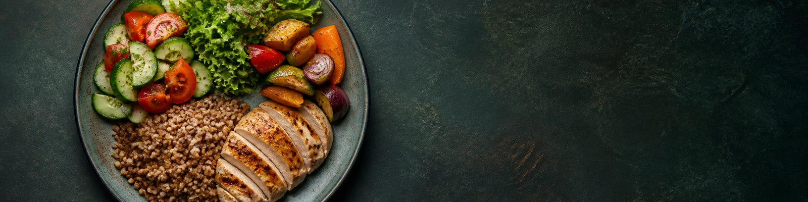

Анкета
За замовчуванням анкета й записи живуть лише у відкритій вкладці. Локальна копія в браузері вмикається окремою кнопкою, зберігається без шифрування й не підходить для спільного пристрою.
Медичний скринінг перед складанням раціону
Позначте стани, за яких автоматичний раціон потребує погодження з лікарем або профільним дієтологом.
Виключення продуктів (алергії та вподобання)
Виключені продукти не з'являться ні в згенерованому меню, ні у випадаючих списках.
Денна норма калорій та БЖВ

Налаштуйте план під себе
Оберіть комфортний режим харчування. Після зміни параметрів калорійність, порції та список покупок перерахуються автоматично.
Для підтримки ваги темп не задається — раціон орієнтується на ваші добові витрати.
Смаколики — це запланований десерт у межах денної норми: частка калорій виділяється на солодке/улюблене, а основні прийоми пропорційно зменшуються. Це знижує ризик зривів. 0% — вимкнути слот повністю.
Професійні параметри розрахунку
Ці коефіцієнти впливають на розподіл макронутрієнтів. Їх змінює спеціаліст з урахуванням стану здоров’я, цілі та складу тіла.
Тижневе меню
Продукти в кожному списку — рівноцінні за калорійністю: змінюйте будь-який, а грами перерахуються автоматично. Грами можна відредагувати вручну (кнопка ↺ повертає авторозрахунок). У кінці кожного списку є група «Страви» — борщ і рагу серед овочів, вареники й деруни серед гарнірів, голубці й сирники серед білкових; їхні калорії приблизні (≈), бо залежать від рецепта.
У ручному режимі одна категорія має однаковий список у всіх прийомах їжі. Можна свідомо повторювати той самий продукт або скопіювати готовий день на весь тиждень.
Список покупок на тиждень
Відкрити список покупок— ПоказатиЗгорнути⌄
Посилання на спрощений вигляд передає меню без поля імені, талії, медичного скринінгу, історії ваги та check-in. Перевірте нотатку спеціаліста: вона теж входить у посилання. Це не пароль і не контроль доступу. «Посилання колезі» передає повну програму й конфіденційні поля — надсилайте його лише довіреному отримувачу.
Додати свій продукт до бази
Програма має рекомендаційний характер і не замінює консультацію лікаря. При хронічних захворюваннях, вагітності чи РХП раціон погоджуйте з лікарем.
Трекінг ваги
Вносьте вагу 3–7 разів на тиждень в однакових умовах, бажано зранку після туалету. Застосунок згладить добові коливання; записи зберігаються на цьому пристрої.
Щотижневий check-in
Заповнюйте раз на тиждень. Це допомагає відрізнити потребу в корекції калорій від пропусків меню або недостатнього відновлення.